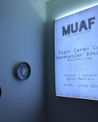
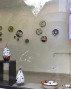
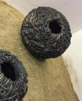
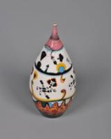
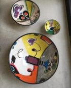
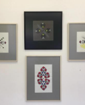

Activity Log @Tomtom DesingHood
20 April- 17 May, 2019
Ozgur Ceren Can; In her academic studies on contemporary ceramic art, she
determined that the institutions that provide ceramic art education in Turkey are the
institutions where Bauhaus and Vkhutemas are institutionalized. Later, while questioning the
success of contemporary ceramic artists in blending art and craft equipment with technology and
transforming them into artistic design, she saw that not only Bauhaus principles but also
Ottoman heritage had a strong influence on this. While creating the “Activity Log” exhibition,
Can set out to experience this practice in her own creative process. The artist, together with
the tile artist Melike Didar, worked on rumis, hatayi and claws from the Ottoman pattern
repertoire loaded with symbolic meanings, and on the axis of these studies, he created a unique
ornamental repertoire from pictograms, which are an interactive but representative communication
language that is widely used both in the real world and in the digital world. . In the process
of preparing the exhibition, the artist's analysis of the roots of pictograms and ceramic
decorations dating back to the beginning of prehistoric times and the evolution of ancient
visual expression languages also led to the formation of a different series in the exhibition.
In order to emphasize the resistance of ceramics and symbols against the destructive power of
time, the forms formed by ceramics with references to low-fired primitive pottery emerged in
this way.






